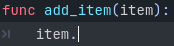
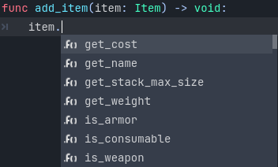

Static typing in GDScript
In this guide, you will learn:
how to use static typing in GDScript;
that static types can help you avoid bugs;
that static typing improves your experience with the editor.
Where and how you use this language feature is entirely up to you: you can use it only in some sensitive GDScript files, use it everywhere, or don't use it at all.
Static types can be used on variables, constants, functions, parameters, and return types.
A brief look at static typing
With static typing, GDScript can detect more errors without even running the code. Also type hints give you and your teammates more information as you're working, as the arguments' types show up when you call a method. Static typing improves editor autocompletion and documentation of your scripts.
Imagine you're programming an inventory system. You code an Item class,
then an Inventory. To add items to the inventory, the people who work with
your code should always pass an Item to the Inventory.add() method.
With types, you can enforce this:
class_name Inventory
func add(reference: Item, amount: int = 1):
var item := find_item(reference)
if not item:
item = _instance_item_from_db(reference)
item.amount += amount
Static types also give you better code completion options. Below, you can see the difference between a dynamic and a static typed completion options.
You've probably encountered a lack of autocomplete suggestions after a dot:

This is due to dynamic code. Godot cannot know what value type you're passing to the function. If you write the type explicitly however, you will get all methods, properties, constants, etc. from the value:

Tip
If you prefer static typing, we recommend enabling the Text Editor > Completion > Add Type Hints editor setting. Also consider enabling some warnings that are disabled by default.
Also, typed GDScript improves performance by using optimized opcodes when operand/argument types are known at compile time. More GDScript optimizations are planned in the future, such as JIT/AOT compilation.
Overall, typed programming gives you a more structured experience. It helps prevent errors and improves the self-documenting aspect of your scripts. This is especially helpful when you're working in a team or on a long-term project: studies have shown that developers spend most of their time reading other people's code, or scripts they wrote in the past and forgot about. The clearer and the more structured the code, the faster it is to understand, the faster you can move forward.
How to use static typing
To define the type of a variable, parameter, or constant, write a colon after the name,
followed by its type. E.g. var health: int. This forces the variable's type
to always stay the same:
var damage: float = 10.5
const MOVE_SPEED: float = 50.0
func sum(a: float = 0.0, b: float = 0.0) -> float:
return a + b
Godot will try to infer types if you write a colon, but you omit the type:
var damage := 10.5
const MOVE_SPEED := 50.0
func sum(a := 0.0, b := 0.0) -> float:
return a + b
Note
There is no difference between
=and:=for constants.You don't need to write type hints for constants, as Godot sets it automatically from the assigned value. But you can still do so to make the intent of your code clearer. Also, this is useful for typed arrays (like
const A: Array[int] = [1, 2, 3]), since untyped arrays are used by default.
What can be a type hint
Here is a complete list of what can be used as a type hint:
Variant. Any type. In most cases this is not much different from an untyped declaration, but increases readability. As a return type, forces the function to explicitly return some value.(Only return type)
void. Indicates that the function does not return any value.Native classes (
Object,Node,Area2D,Camera2D, etc.).Global, native and custom named enums. Note that an enum type is just an
int, there is no guarantee that the value belongs to the set of enum values.Constants (including local ones) if they contain a preloaded class or enum.
You can use any class, including your custom classes, as types. There are two ways to use them in scripts. The first method is to preload the script you want to use as a type in a constant:
const Rifle = preload("res://player/weapons/rifle.gd")
var my_rifle: Rifle
The second method is to use the class_name keyword when you create the script.
For the example above, your rifle.gd would look like this:
class_name Rifle
extends Node2D
If you use class_name, Godot registers the Rifle type globally in the editor,
and you can use it anywhere, without having to preload it into a constant:
var my_rifle: Rifle
Specify the return type of a function with the arrow ->
To define the return type of a function, write a dash and a right angle bracket ->
after its declaration, followed by the return type:
func _process(delta: float) -> void:
pass
The type void means the function does not return anything. You can use any type,
as with variables:
func hit(damage: float) -> bool:
health_points -= damage
return health_points <= 0
You can also use your own classes as return types:
# Adds an item to the inventory and returns it.
func add(reference: Item, amount: int) -> Item:
var item: Item = find_item(reference)
if not item:
item = ItemDatabase.get_instance(reference)
item.amount += amount
return item
Covariance and contravariance
When inheriting base class methods, you should follow the Liskov substitution principle.
Covariance: When you inherit a method, you can specify a return type that is more specific (subtype) than the parent method.
Contravariance: When you inherit a method, you can specify a parameter type that is less specific (supertype) than the parent method.
Example:
class_name Parent
func get_property(param: Label) -> Node:
# ...
class_name Child extends Parent
# `Control` is a supertype of `Label`.
# `Node2D` is a subtype of `Node`.
func get_property(param: Control) -> Node2D:
# ...
Specify the element type of an Array
To define the type of an Array, enclose the type name in [].
An array's type applies to for loop variables, as well as some operators like
[], [...] = (assignment), and +. Array methods
(such as push_back) and other operators (such as ==)
are still untyped. Built-in types, native and custom classes,
and enums may be used as element types. Nested array types (like Array[Array[int]])
are not supported.
var scores: Array[int] = [10, 20, 30]
var vehicles: Array[Node] = [$Car, $Plane]
var items: Array[Item] = [Item.new()]
var array_of_arrays: Array[Array] = [[], []]
# var arrays: Array[Array[int]] -- disallowed
for score in scores:
# score has type `int`
# The following would be errors:
scores += vehicles
var s: String = scores[0]
scores[0] = "lots"
Since Godot 4.2, you can also specify a type for the loop variable in a for loop.
For instance, you can write:
var names = ["John", "Marta", "Samantha", "Jimmy"]
for name: String in names:
pass
The array will remain untyped, but the name variable within the for loop
will always be of String type.
Specify the element type of a Dictionary
To define the type of a Dictionary's keys and values, enclose the type name in []
and separate the key and value type with a comma.
A dictionary's value type applies to for loop variables, as well as some operators like
[] and [...] = (assignment). Dictionary methods that return values
and other operators (such as ==) are still untyped. Built-in types, native
and custom classes, and enums may be used as element types. Nested typed collections
(like Dictionary[String, Dictionary[String, int]]) are not supported.
var fruit_costs: Dictionary[String, int] = { "apple": 5, "orange": 10 }
var vehicles: Dictionary[String, Node] = { "car": $Car, "plane": $Plane }
var item_tiles: Dictionary[Vector2i, Item] = { Vector2i(0, 0): Item.new(), Vector2i(0, 1): Item.new() }
var dictionary_of_dictionaries: Dictionary[String, Dictionary] = { { } }
# var dicts: Dictionary[String, Dictionary[String, int]] -- disallowed
for fruit in fruit_costs:
# `fruit` has type `String`
# The following would be errors:
fruit_costs["pear"] += vehicles
var s: String = fruit_costs["apple"]
fruit_costs["orange"] = "lots"
Type casting
Type casting is an important concept in typed languages. Casting is the conversion of a value from one type to another.
Imagine an Enemy in your game, that extends Area2D. You want it to collide
with the Player, a CharacterBody2D with a script called PlayerController
attached to it. You use the body_entered signal to detect the collision.
With typed code, the body you detect is going to be a generic PhysicsBody2D,
and not your PlayerController on the _on_body_entered callback.
You can check if this PhysicsBody2D is your Player with the as keyword,
and using the colon : again to force the variable to use this type.
This forces the variable to stick to the PlayerController type:
func _on_body_entered(body: PhysicsBody2D) -> void:
var player := body as PlayerController
if not player:
return
player.damage()
As we're dealing with a custom type, if the body doesn't extend
PlayerController, the player variable will be set to null.
We can use this to check if the body is the player or not. We will also
get full autocompletion on the player variable thanks to that cast.
Note
The as keyword silently casts the variable to null in case of a type
mismatch at runtime, without an error/warning. While this may be convenient
in some cases, it can also lead to bugs. Use the as keyword only if this
behavior is intended. A safer alternative is to use the is keyword:
if not (body is PlayerController):
push_error("Bug: body is not PlayerController.")
var player: PlayerController = body
if not player:
return
player.damage()
You can also simplify the code by using the is not operator:
if body is not PlayerController:
push_error("Bug: body is not PlayerController")
Alternatively, you can use the assert() statement:
assert(body is PlayerController, "Bug: body is not PlayerController.")
var player: PlayerController = body
if not player:
return
player.damage()
Note
If you try to cast with a built-in type and it fails, Godot will throw an error.
Safe lines
You can also use casting to ensure safe lines. Safe lines are a tool to tell you when ambiguous lines of code are type-safe. As you can mix and match typed and dynamic code, at times, Godot doesn't have enough information to know if an instruction will trigger an error or not at runtime.
This happens when you get a child node. Let's take a timer for example:
with dynamic code, you can get the node with $Timer. GDScript supports
duck-typing,
so even if your timer is of type Timer, it is also a Node and
an Object, two classes it extends. With dynamic GDScript, you also don't
care about the node's type as long as it has the methods you need to call.
You can use casting to tell Godot the type you expect when you get a node:
($Timer as Timer), ($Player as CharacterBody2D), etc.
Godot will ensure the type works and if so, the line number will turn
green at the left of the script editor.

Unsafe line (line 7) vs Safe Lines (line 6 and 8)
Note
Safe lines do not always mean better or more reliable code. See the note above
about the as keyword. For example:
@onready var node_1 := $Node1 as Type1 # Safe line.
@onready var node_2: Type2 = $Node2 # Unsafe line.
Even though node_2 declaration is marked as an unsafe line, it is more
reliable than node_1 declaration. Because if you change the node type
in the scene and accidentally forget to change it in the script, the error
will be detected immediately when the scene is loaded. Unlike node_1,
which will be silently cast to null and the error will be detected later.
Note
You can turn off safe lines or change their color in the editor settings.
Typed or dynamic: stick to one style
Typed GDScript and dynamic GDScript can coexist in the same project. But it's recommended to stick to either style for consistency in your codebase, and for your peers. It's easier for everyone to work together if you follow the same guidelines, and faster to read and understand other people's code.
Typed code takes a little more writing, but you get the benefits we discussed above. Here's an example of the same, empty script, in a dynamic style:
extends Node
func _ready():
pass
func _process(delta):
pass
And with static typing:
extends Node
func _ready() -> void:
pass
func _process(delta: float) -> void:
pass
As you can see, you can also use types with the engine's virtual methods.
Signal callbacks, like any methods, can also use types. Here's a body_entered
signal in a dynamic style:
func _on_area_2d_body_entered(body):
pass
And the same callback, with type hints:
func _on_area_2d_body_entered(body: PhysicsBody2D) -> void:
pass
Warning system
Note
Detailed documentation about the GDScript warning system has been moved to GDScript warning system.
Godot gives you warnings about your code as you write it. The engine identifies sections of your code that may lead to issues at runtime, but lets you decide whether or not you want to leave the code as it is.
We have a number of warnings aimed specifically at users of typed GDScript. By default, these warnings are disabled, you can enable them in Project Settings (Debug > GDScript, make sure Advanced Settings is enabled).
You can enable the UNTYPED_DECLARATION warning if you want to always use
static types. Additionally, you can enable the INFERRED_DECLARATION warning
if you prefer a more readable and reliable, but more verbose syntax.
UNSAFE_* warnings make unsafe operations more noticeable, than unsafe lines.
Currently, UNSAFE_* warnings do not cover all cases that unsafe lines cover.
Common unsafe operations and their safe counterparts
Global scope methods
The following global scope methods are not statically typed, but they have typed counterparts available. These methods return statically typed values:
Method |
Statically typed equivalents |
|---|---|
(untyped
clamp() does not work on Color) |
|
When using static typing, use the typed global scope methods whenever possible. This ensures you have safe lines and benefit from typed instructions for better performance.
UNSAFE_PROPERTY_ACCESS and UNSAFE_METHOD_ACCESS warnings
In this example, we aim to set a property and call a method on an object
that has a script attached with class_name MyScript and that extends
Node2D. If we have a reference to the object as a Node2D (for instance,
as it was passed to us by the physics system), we can first check if the
property and method exist and then set and call them if they do:
if "some_property" in node_2d:
node_2d.some_property = 20 # Produces UNSAFE_PROPERTY_ACCESS warning.
if node_2d.has_method("some_function"):
node_2d.some_function() # Produces UNSAFE_METHOD_ACCESS warning.
However, this code will produce UNSAFE_PROPERTY_ACCESS and
UNSAFE_METHOD_ACCESS warnings as the property and method are not present
in the referenced type - in this case a Node2D. To make these operations
safe, you can first check if the object is of type MyScript using the
is keyword and then declare a variable with the type MyScript on
which you can set its properties and call its methods:
if node_2d is MyScript:
var my_script: MyScript = node_2d
my_script.some_property = 20
my_script.some_function()
Alternatively, you can declare a variable and use the as operator to try
to cast the object. You'll then want to check whether the cast was successful
by confirming that the variable was assigned:
var my_script := node_2d as MyScript
if my_script != null:
my_script.some_property = 20
my_script.some_function()
UNSAFE_CAST warning
In this example, we would like the label connected to an object entering our
collision area to show the area's name. Once the object enters the collision
area, the physics system sends a signal with a Node2D object, and the most
straightforward (but not statically typed) solution to do what we want could
be achieved like this:
func _on_body_entered(body: Node2D) -> void:
body.label.text = name # Produces UNSAFE_PROPERTY_ACCESS warning.
This piece of code produces an UNSAFE_PROPERTY_ACCESS warning because
label is not defined in Node2D. To solve this, we could first check if the
label property exist and cast it to type Label before settings its text
property like so:
func _on_body_entered(body: Node2D) -> void:
if "label" in body:
(body.label as Label).text = name # Produces UNSAFE_CAST warning.
However, this produces an UNSAFE_CAST warning because body.label is of a
Variant type. To safely get the property in the type you want, you can use the
Object.get() method which returns the object as a Variant value or returns
null if the property doesn't exist. You can then determine whether the
property contains an object of the right type using the is keyword, and
finally declare a statically typed variable with the object:
func _on_body_entered(body: Node2D) -> void:
var label_variant: Variant = body.get("label")
if label_variant is Label:
var label: Label = label_variant
label.text = name
Cases where you can't specify types
To wrap up this introduction, let's mention cases where you can't use type hints. This will trigger a syntax error.
You can't specify the type of individual elements in an array or a dictionary:
var enemies: Array = [$Goblin: Enemy, $Zombie: Enemy]
var character: Dictionary = {
name: String = "Richard",
money: int = 1000,
inventory: Inventory = $Inventory,
}
Nested types are not currently supported:
var teams: Array[Array[Character]] = []
Summary
Typed GDScript is a powerful tool. It helps you write more structured code, avoid common errors, and create scalable and reliable systems. Static types improve GDScript performance and more optimizations are planned for the future.